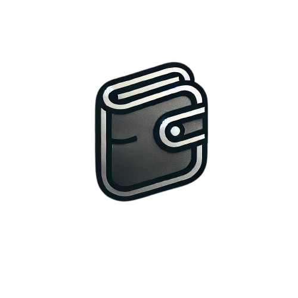

<div class="navbar w-full bg-base-100 border-b border-slate-700">
  <div class="flex w-full justify-between items-center px-4">
    <!-- Logo and Links Section for Desktop -->
    <div class="flex items-center gap-6">
      <!-- Logo Section -->
      <a
        class="text-base-content flex items-center gap-2"
        routerLink="/dashboard"
      >
        
      </a>

      <!-- Navigation Links - Desktop -->
      <div class="hidden lg:flex gap-9 ml-2">
        <a
          class="text-base-content flex items-center gap-2"
          routerLink="/bank-transfer"
        >
          <svg
            xmlns="http://www.w3.org/2000/svg"
            fill="none"
            viewBox="0 0 24 24"
            stroke-width="1.5"
            stroke="currentColor"
            class="size-6"
          >
            <path
              stroke-linecap="round"
              stroke-linejoin="round"
              d="M7.5 21 3 16.5m0 0L7.5 12M3 16.5h13.5m0-13.5L21 7.5m0 0L16.5 12M21 7.5H7.5"
            />
          </svg>
          Nuovo Bonifico
        </a>
        <a
          class="text-base-content flex items-center gap-2"
          routerLink="/phone-credit"
        >
          <svg
            xmlns="http://www.w3.org/2000/svg"
            fill="none"
            viewBox="0 0 24 24"
            stroke-width="1.5"
            stroke="currentColor"
            class="size-6"
          >
            <path
              stroke-linecap="round"
              stroke-linejoin="round"
              d="M2.25 8.25h19.5M2.25 9h19.5m-16.5 5.25h6m-6 2.25h3m-3.75 3h15a2.25 2.25 0 0 0 2.25-2.25V6.75A2.25 2.25 0 0 0 19.5 4.5h-15a2.25 2.25 0 0 0-2.25 2.25v10.5A2.25 2.25 0 0 0 4.5 19.5Z"
            />
          </svg>
          Ricarica Telefonica
        </a>
      </div>
    </div>

    <!-- Mobile Menu Button -->
    <div class="lg:hidden">
      <button
        tabindex="0"
        class="btn btn-ghost btn-circle"
        (click)="isMobileMenuOpen = !isMobileMenuOpen"
      >
        <svg
          xmlns="http://www.w3.org/2000/svg"
          class="h-5 w-5"
          fill="none"
          viewBox="0 0 24 24"
          stroke="currentColor"
        >
          <path
            stroke-linecap="round"
            stroke-linejoin="round"
            stroke-width="2"
            d="M4 6h16M4 12h16m-7 6h7"
          />
        </svg>
      </button>
    </div>

    <!-- User Profile Dropdown -->
    <div class="dropdown dropdown-end">
      <div tabindex="0" role="button" class="btn btn-ghost btn-circle avatar">
        <div class="w-10 rounded-full">
          
        </div>
      </div>
      <ul
        tabindex="0"
        class="menu menu-sm dropdown-content mt-3 z-[1] p-2 shadow bg-base-100 rounded-box w-52"
      >
        <li><a class="text-base-content" routerLink="/profile">Profilo</a></li>
        <li>
          <a class="text-base-content" routerLink="/settings">Impostazioni</a>
        </li>
        <li>
          <a class="logout-btn flex items-center" (click)="onLogout()"
            >Logout</a
          >
        </li>
      </ul>
    </div>
  </div>

  <!-- Mobile Navigation Links Dropdown -->
  <div *ngIf="isMobileMenuOpen" class="lg:hidden w-full px-4">
    <a class="block py-2 text-base-content" routerLink="/bank-transfer"
      >Nuovo Bonifico</a
    >
    <a class="block py-2 text-base-content" routerLink="/phone-credit"
      >Ricarica Telefonica</a
    >
  </div>
</div>
